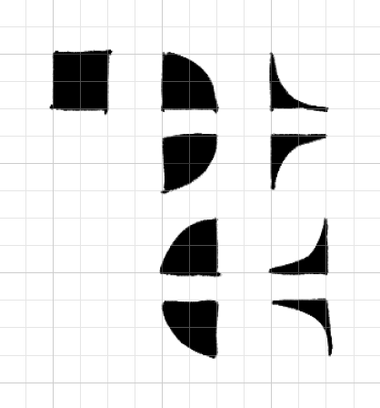
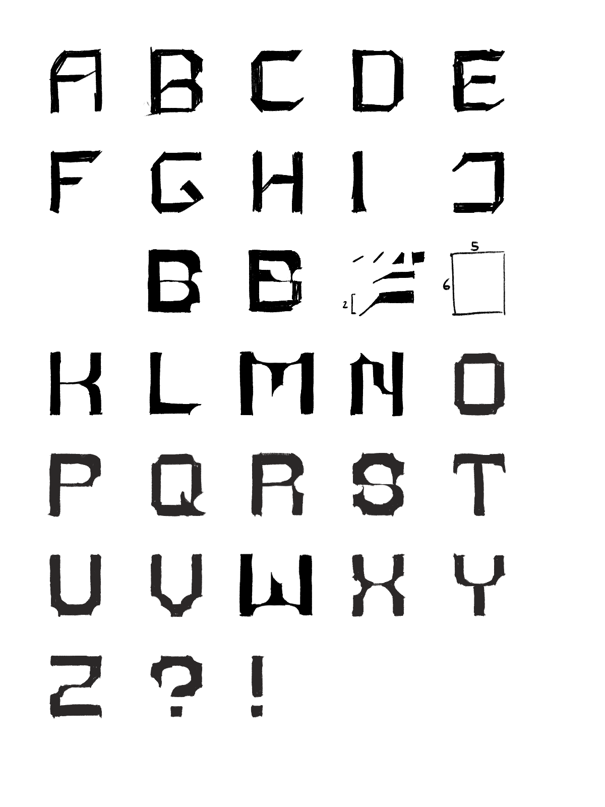
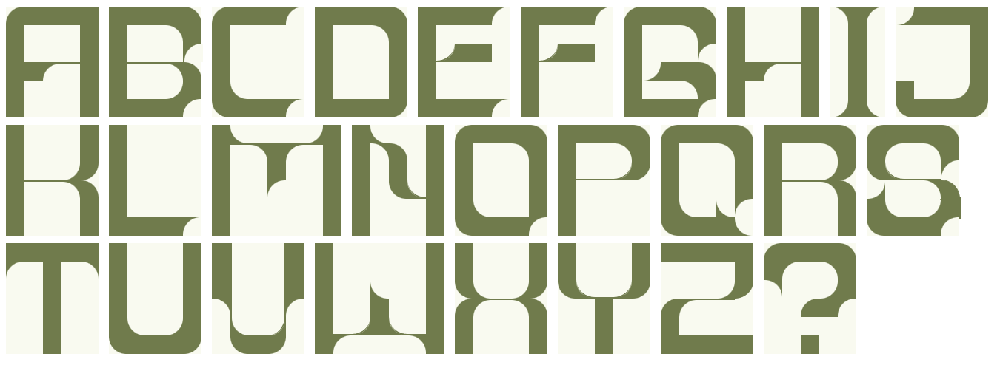

A1: CSS TYPEFACE
Click here to view the page with all the final letters.
CONCEPT
Since this is going to be done in CSS, I figured the best way to approach it would be to use a grid. I didn't want to create an 8-bit/pixel font, so I had to brainstorm a way to break free from the grid in some way; or at least create the illusion of doing so. By combining full 'tiles' with the border-radius effect, I was able to create an array of different tiles that could be arranged to form letters without looking as blocky. You can see all the tiles to the right.
The convex tiles were created with the aforementioned border-radius, targetting different corners of the divs, while the concave tiles were created by placing a div for a convex tile matching the page's background color on top of a full tile.
RESEARCH
After getting an initial concept down, I decided to find inspiration through other designers' work, since I'm not familiar with type design. Here's a link to the Behance board I created showcasing some fonts that were inspiring.
SKETCHING
I started off with a rough design based on the research I did and sketched out some iterations with the help of a grid.
The first 8 or so letters were sketched before I took a crack at actually creating them in a CSS grid, to just get a general 'look' for the font; I also included some of the sketches for 'tiles' I wanted that fell through since I couldn't find a great way to draw diagonal lines in CSS.
I continued with the rest of the font after working through the first pass of the initial letters, this time sticking to only arranging with the tiles I created.
FIRST PASS

The first pass, I was pretty happy with the look of the typeface and the plan on sticking through with this style for the rest of it. Some of the issues I ran into were that the wav the concave tips connected to others letters; it tapered off into a complete 0, which means it looked a little too wispy/not structurally sound for my liking. To fix this, I added a couple new div classes that just added bordered lines 2px thick to create the thin lines.
There was still a bit of jankiness with the placement of some crossbars, the thin lines, the inner curves etc... but overall it looked good.
FINAL PASS
As I was working, I filled out all the letters, and I had some minor issues with tiles not lining up perfectly due to the nature of the bordered lines. I solved these problems with careful placement of the border lines, and I made sure that i was using variables for the colours so I could change them easily for the typographic poster afterwards (they have a green colour right now because I'm sharing the CSS file, but originally I worked in black and white).
I added some small interactivity with hover effects, and done!

Or so I thought... After using this layout and putting it into practice on the website, something just didn't look quite right. I slept on it, and then I realized it's because I started getting a little too crazy with the intricate details by putting convex and concave tiles next to each other, and some letters just didn't fit with the rest of them. So, I simplified things, and redid a couple of the edges, and it looks much more cohesive.
